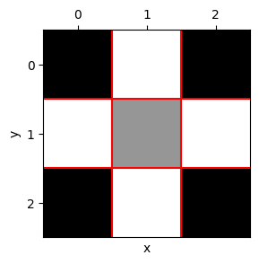
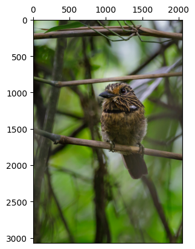
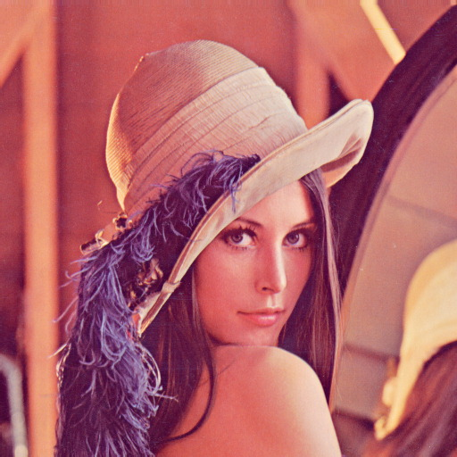

Da Captura ao Pixel - Amostragem, Quantização e Conectividade
Este capítulo aprofunda a compreensão da imagem digital, transitando da natureza física da captura para a sua representação matemática discreta. Investigamos como a luz se torna dado e como a organização espacial dos pixels define as relações de vizinhança e conectividade essenciais para algoritmos avançados de Visão Computacional.
Objetivos
Ao final deste capítulo, você será capaz de:
Explicar o modelo físico de formação da imagem baseado em iluminação e refletância.
Diferenciar os mecanismos da visão humana e dos sensores digitais.
Compreender os processos de amostragem (discretização do espaço) e quantização (discretização da intensidade).
Descrever as relações topológicas entre pixels: vizinhança, adjacência, conectividade e distâncias.
Realizar transformações geométricas básicas (translação, rotação, escala) preservando a qualidade.
Visualizar na prática os efeitos da variação da resolução espacial e da profundidade de bits.
O Olho e a Câmera - Elementos da Percepção Visual
A formação de uma imagem digital começa com a captura da luz refletida pelos objetos, como intruduzido no capítulo anterior. Tanto o olho humano quanto as câmeras digitais seguem princípios semelhantes, mas com diferenças importantes.
Visão humana
O olho é um sistema óptico complexo: a luz atravessa a córnea, o humor aquoso, o cristalino (que ajusta o foco) e o humor vítreo até atingir a retina. Na retina, os cones (≈6 milhões) são responsáveis pela visão de cores (três tipos sensíveis ao vermelho, verde e azul), enquanto os bastonetes (≈120 milhões) operam em baixa luminosidade, fornecendo apenas intensidade. O ponto cego é a região de saída do nervo óptico, sem fotorreceptores.
Sensores digitais
Câmeras digitais utilizam sensores CCD ou CMOS que substituem a retina. Cada elemento do sensor (fotossítio) acumula carga elétrica proporcional à luz incidente. Um filtro de Bayer (matriz de filtros coloridos) permite capturar as três componentes de cor. Um conversor analógico-digital (ADC) quantiza a carga em um valor numérico. Diferentemente do olho, o sensor digital tem resolução espacial fixa (número de pixels) e profundidade de bits definida (ex.: 8 bits por canal).
Curiosidade: A resolução efetiva da fóvea (visão central de alta definição) é equivalente a aproximadamente 120 × 120 pixels. O processamento cerebral realiza enorme pós-processamento para gerar a percepção de alta resolução.
O Modelo Matemático da Formação da Imagem
Uma imagem pode ser modelada como o produto de duas funções:
\[
f(x,y) = i(x,y) \cdot r(x,y)
\] #eq-02-imagem
onde:
\(i(x,y)\) é a iluminação incidente sobre a cena (energia luminosa por unidade de área). Depende da fonte de luz.
\(r(x,y)\) é a refletância do objeto (fração da luz refletida). Depende das propriedades do material e da superfície.
Na prática, as duas componentes variam em faixas distintas: \(i(x,y)\) varia lentamente no espaço, enquanto \(r(x,y)\) pode variar rapidamente (texturas, bordas). O processamento de imagens frequentemente tenta separar ou compensar essas componentes (ex.: correção de iluminação não uniforme).
Digitalização: Amostragem e Quantização
Para transformar uma cena contínua em uma imagem digital, dois processos são necessários.
Amostragem - Discretização do espaço
A amostragem consiste em medir o valor da função \(f(x,y)\) em pontos igualmente espaçados, formando uma matriz de \(M\) linhas (altura) e \(N\) colunas (largura). Cada elemento dessa matriz é um pixel. A resolução espacial é dada por \(M \times N\). Quanto maior a resolução, mais detalhes espaciais são preservados, mas maior também o custo computacional e de armazenamento.
Quantização - Discretização da intensidade
A quantização associa a cada pixel um valor numérico discreto, geralmente representado por um inteiro de \(b\) bits. A profundidade de bits define o número de níveis de intensidade: \(2^b\). Imagens em tons de cinza costumam usar 8 bits (256 níveis). Imagens coloridas usam três canais de 8 bits (24 bits no total).
Ilustração: Se usarmos apenas 1 bit por pixel (preto e branco), perdemos todos os tons intermediários. Com 2 bits (4 níveis) já se percebe degradês grosseiros. Com 8 bits, o olho humano dificilmente percebe a discretização (visão contínua).
WarningErro de quantização
Erro de quantização é a diferença entre o valor analógico real e o valor discreto atribuído. Ele se manifesta como ruído de quantização, visível em regiões com gradiente suave quando se usa poucos bits (efeito de “posterização”).
Laboratório prático: Efeitos da amostragem e quantização
Os experimentos a seguir mostram como a redução da resolução espacial (subamostragem) e da profundidade de bits degradam a qualidade visual. Use o código para explorar diferentes fatores e níveis de cinza.
import os, importlib, urllib.requestimport numpy as npimport matplotlib.pyplot as pltimport cv2# Baixar morph.py se necessárioBASE_URL ="https://raw.githubusercontent.com/fzampirolli/pdi-vc/master/morph"for f in ["morph.py"]:ifnot os.path.exists(f): urllib.request.urlretrieve(f"{BASE_URL}/{f}", f)import morphimportlib.reload(morph)from morph import mmprint("✅ Ambiente pronto")
O experimento apresentado na Figure 1 ilustra o compromisso entre a resolução espacial e o custo de armazenamento em memória. O código utiliza a técnica de subamostragem por fatiamento (slicing) para reduzir a matriz original de pixels conforme um fator \(f\), resultando em uma economia drástica de memória — por exemplo, um fator \(f=8\) reduz o tamanho do dado em 64 vezes (\(8^2\)). Para fins de comparação visual, as imagens reduzidas são restauradas às dimensões originais (\(512 \times 512\)) através da interpolação por vizinho mais próximo (nearest). Este processo não recupera a informação perdida, mas torna evidente o efeito de aliasing e a estrutura de blocos (pixelização) gerada pela baixa densidade de dados da matriz amostrada.
def subsample_simple(image, f):# Subamostragem via fatiamento (slicing) reduced = image[::f, ::f]# Cálculo de memória em KB mem_kb = reduced.nbytes /1024 label =f"{reduced.shape[1]}x{reduced.shape[0]}, {int(mem_kb)} KB\n(Fator {f})"# Restaura o tamanho para visualização (H, W originais) res = mm.resize(reduced, (image.shape[1], image.shape[0]), method='nearest')return res, labelfactors = [1, 4, 8, 12]# Gera os resultados e separa em listas para o mm.showresults = [subsample_simple(img_gray, f) for f in factors]imgs_list = [r[0] for r in results]titles_list = [r[1] for r in results]mm.show(imgs_list, titles=titles_list, cols=4)
Figure 1
O experimento na Figure 2 foca na quantização de intensidade, o processo de discretização da amplitude da função \(f(x,y)\). Enquanto a subamostragem afeta a grade espacial, a redução da profundidade de bits limita a quantidade de tons de cinza disponíveis para representar o brilho.
Ao reduzir a profundidade de 8 bits (256 níveis) para valores menores, surge o efeito de posterização, onde os gradientes suaves de uma cena são substituídos por transições abruptas. No limite de 1 bit, a imagem torna-se estritamente binária, preservando apenas a silhueta e perdendo detalhes de textura e volume.
Análise Técnica
Domínio vs. Codomínio: Note que a resolução espacial (dimensões da matriz) permanece constante em 512x512; o que se altera é apenas o codomínio da função da imagem.
Constância de Memória: Observe nos títulos que o tamanho em KB não diminui. Isso ocorre porque o NumPy armazena cada pixel quantizado em um contêiner de 8 bits (uint8), independentemente de o valor real ser apenas 0 ou 1.
Percepção: A degradação visual torna-se crítica abaixo de 4 bits, onde o olho humano começa a perceber as “fronteiras” artificiais criadas pela falta de tons intermediários.
def quantize_simple(image, bits):"""Reduz a profundidade de bits e calcula metadados de memória.""" levels =2** bits# Normalização e quantização uniforme quantized = (np.floor(image /256* levels) / levels *255).astype(np.uint8)# Cálculo de memória em KB mem_kb = quantized.nbytes /1024 label =f"{bits} bits ({levels} níveis)\n{int(mem_kb)} KB"return quantized, label# Lista de bits para teste (8 é o padrão, 1 é o binário)bits_test = [8, 4, 2, 1]# Gera os resultados e separa em listas para o mm.showresults_q = [quantize_simple(img_gray, b) for b in bits_test]imgs_q = [r[0] for r in results_q]titles_q = [r[1] for r in results_q]mm.show(imgs_q, titles=titles_q, cols=4)
Figure 2
# Exemplo de compactação real para economia de memóriaimport numpy as np# Imagem binária em uint8 (512x512)img_uint8 = np.zeros((512, 512), dtype=np.uint8) print(f"Tamanho uint8: {img_uint8.nbytes /1024} KB") # 256 KB# Imagem compactada (Bit-packing)img_packed = np.packbits(img_uint8)print(f"Tamanho Compactado: {img_packed.nbytes /1024} KB") # 32 KB
A limitação de tipos de dados menores que um byte no ecossistema Python/NumPy deve-se à arquitetura de hardware, que endereça a memória em blocos de 8 bits (Bytes). Para que se mantenha a compatibilidade com o OpenCV e se garanta a eficiência, mapeiam-se até mesmo elementos binários para contêineres de 1 byte (uint8 ou bool8).
Embora linguagens como ANSI C permitam a compactação de 8 pixels por byte (bit-packing), tal abordagem exige a descompactação constante para cálculos e impõe alta complexidade na manipulação de ponteiros. Conforme a Table 1, privilegia-se o uso de uint8 pela facilidade no acesso a vizinhos e pela versatilidade em transformações geométricas. Além disso, métodos nativos do NumPy e OpenCV executam o processamento internamente em baixo nível (C/C++), o que torna operações vetorizadas mais rápidas do que implementações manuais com laços aninhados em Python.
Table 1: Comparativo entre estratégias de compactação e eficiência de processamento.
Característica
Python (NumPy/OpenCV)
ANSI C (Bit-packing)
Menor Unidade
1 Byte (8 bits)
1 Bit
Memória (Binária)
256 KB (para 512x512)
32 KB (para 512x512)
Velocidade
Alta (Vetorização em C)
Variável (Lenta se houver bit-shift)
Complexidade
Baixa: Métodos prontos
Alta: Ponteiros e Máscaras
Relações entre Pixels - Topologia da Imagem
Os pixels não são elementos isolados; suas posições relativas definem importantes conceitos para processamento.
Vizinhança
Dado um pixel de coordenadas \((x,y)\), definem-se dois tipos principais de vizinhança (para imagens em \(grid\) retangular):
Vizinhança-4 (von Neumann): inclui os pixels nas posições \((x-1,y)\), \((x+1,y)\), \((x,y-1)\), \((x,y+1)\).
Vizinhança-8 (Moore): inclui todos os oito pixels adjacentes (acrescenta os quatro diagonais).
A escolha da vizinhança influencia operações como detecção de bordas, cálculo de gradientes e conectividade.
# Criação de uma matriz 3x3 para exemplo topológicoviz = np.zeros((3, 3), dtype='uint8')# Pixel central (p)viz[1, 1] =150# Definindo Vizinhança-4 (N4) com valor diferente para destaqueviz[0, 1] = viz[2, 1] = viz[1, 0] = viz[1, 2] =255# Exibição da matriz para análise de coordenadasmm.drawImagePlt(viz)

Figure 3: Ilustração de vizinhanças 4 em uma matriz 3x3. No centro (1,1), o pixel de interesse.
Adjacência, conectividade e caminhos
Dois pixels são adjacentes se estão em contato segundo uma vizinhança definida e satisfazem um critério de valor (ex.: mesmo nível de intensidade). Uma conectividade define uma relação de equivalência entre pixels que formam uma região conexa. Um caminho é uma sequência de pixels adjacentes.
A conectividade-4 e conectividade-8 podem produzir resultados diferentes na segmentação e no cálculo de componentes conexas (etiquetagem). Por exemplo, um padrão de tabuleiro de xadrez pode ser completamente desconexo em 4-vizinhança, mas totalmente conexo em 8-vizinhança.
Distâncias entre pixels
As métricas de distância são fundamentais para quantificar a proximidade física e a conectividade entre os elementos que compõem a grade digital. Conforme demonstrado na Table 2, a escolha da métrica define o custo de deslocamento entre pixels e altera o comportamento de algoritmos de segmentação e análise morfológica.
Para medir a distância entre dois pixels \(p(x_1, y_1)\) e \(q(x_2, y_2)\), utilizam-se diferentes funções métricas que impõem restrições de movimento distintas sobre o grid:
Table 2: Comparativo de métricas de distância aplicadas à malha de pixels.
Métrica
Definição
Interpretação
Euclidiana
\(\sqrt{(x_1-x_2)^2 + (y_1-y_2)^2}\)
Distância em linha reta (contínua)
Manhattan (City block)
\(|x_1-x_2| + |y_1-y_2|\)
Movimentos horizontais + verticais
Chebyshev (Tabuleiro)
\(\max(|x_1-x_2|, |y_1-y_2|)\)
Movimentos incluindo diagonais
Essas distâncias são aplicadas em diversos contextos de PDI, incluindo algoritmos de interpolação geométrica, transformadas de distância, crescimento de regiões e análise de formas.
NoteExemplo prático
Considerando dois pixels com deslocamentos relativos \(\Delta x = 3\) e \(\Delta y = 4\):
Euclidiana: \(\sqrt{3^2 + 4^2} = 5\) (hipotenusa do triângulo retângulo).
Manhattan: \(3 + 4 = 7\) (soma dos catetos).
Chebyshev: \(\max(3, 4) = 4\) (predomínio do maior deslocamento).
Armazenamento de Imagens
A escolha do formato de arquivo é um passo decisivo no fluxo de processamento, pois determina como os dados de amostragem e quantização serão preservados ou descartados. Conforme se apresenta na Table 3, cada extensão equilibra de forma distinta a fidelidade dos dados e a eficiência de armazenamento.
As imagens digitais podem ser armazenadas em diversos formatos, cada um com características que impactam o processamento posterior:
Table 3: Principais formatos de armazenamento e suas aplicações em PDI.
Formato
Características
Uso típico
PGM
Formato simples de mapa de cinzas (texto ou binário).
Pesquisa acadêmica e ferramentas Unix.
BMP
Não comprimido (ou compressão simples).
Windows, aplicações legado.
PNG
Compressão sem perdas (lossless).
Web, imagens com transparência.
JPEG
Compressão com perdas (lossy), ideal para fotografias.
Fotos, imagens médicas (uso moderado).
TIFF
Suporta múltiplas camadas e compressão variada.
Editoração, arquivamento.
RAW
Dados brutos (sensor ou matriz sem cabeçalho).
Fotografia profissional e exames médicos.
Os metadados de uma imagem incluem parâmetros como largura, altura, profundidade de bits e codificação de cor. Em formatos científicos, preservam-se também informações de calibração e detalhes da captura. Ao utilizar-se a função mm.read(), a biblioteca morph preserva automaticamente esses dados para que se respeitem as propriedades originais da imagem.
Em contextos científicos e hospitalares, privilegia-se o padrão DICOM para garantir que não haja perda de precisão diagnóstica. Repositórios públicos como o The Cancer Imaging Archive (TCIA), o Alzheimer’s Disease Neuroimaging Initiative (ADNI) e o PhysioNet disponibilizam vastos conjuntos de dados neste formato, incluindo metadados clínicos anonimizados que são essenciais para a investigação científica.
Metadados e o Formato EXIF
Um arquivo de imagem digital não contém apenas a matriz de pixels. Ele carrega um cabeçalho chamado EXIF (Exchangeable Image File Format), que funciona como uma “certidão de nascimento” da captura. Enquanto a amostragem espacial lida com o conteúdo visual, o EXIF armazena o contexto técnico (abertura, ISO, hardware) e geográfico (coordenadas GPS).
Exemplo: Extração de Contexto Geográfico
Diferente da matriz de pixels pura obtida por mm.read(), o uso da biblioteca Pillow permite acessar esse cabeçalho antes de qualquer processamento. O código abaixo extrai os dados da Figure 4, convertendo as coordenadas originais de graus/minutos para o formato decimal.
Por que esta separação é importante?
Em aplicações de sensoriamento remoto ou perícia, a amostragem visual isolada é insuficiente. Enquanto o OpenCV (mm.read) descarta metadados para otimizar o processamento da matriz, a preservação do EXIF permite recuperar o “onde” e o “quando”.
Essa distinção transforma uma grade numérica de intensidades em um dado georreferenciado, permitindo que a imagem seja integrada a Sistemas de Informação Geográfica (SIG) ou utilizada para validar a integridade de uma captura em estudos científicos.
import requestsfrom PIL import Imagefrom PIL.ExifTags import TAGSfrom io import BytesIOurl ="https://upload.wikimedia.org/wikipedia/commons/c/c5/Area_de_Prote%C3%A7%C3%A3o_Ambiental_Quilombos_do_M%C3%A9dio_Ribeira_-_Thomas-Fuhrmann_%282023-_02%29_Malacoptila_striata.jpg"# Download e leitura do cabeçalho EXIFres = requests.get(url, headers={'User-Agent': 'PDI-Book/1.0'})img_pil = Image.open(BytesIO(res.content))exif = img_pil._getexif()if exif:# 1. Extração de Hardware e Tempo dados = {TAGS[k]: v for k, v in exif.items() if k in TAGS and TAGS[k] in ['Make', 'Model', 'DateTime']}print(f"Hardware/Tempo: {dados}")# 2. Processamento de GPS com conversão para float gps = exif.get(34853) if gps:# Lambda convertendo frações para float para evitar erro de formatação to_dec =lambda dms, ref: float(-(dms[0]+dms[1]/60+dms[2]/3600) if ref in'SW'else (dms[0]+dms[1]/60+dms[2]/3600)) lat, lon = to_dec(gps[2], gps[1]), to_dec(gps[4], gps[3])print(f"GPS Decimal: {lat:.6f}, {lon:.6f}")mm.show(img_pil)
Hardware/Tempo: {'Make': 'Canon', 'Model': 'Canon EOS 5D Mark IV', 'DateTime': '2023:07:25 09:44:26'}
GPS Decimal: -24.587955, -48.629758

Figure 4: Área de Proteção Ambiental Quilombos do Médio Ribeira - Barbudo-rajado (Malacoptila striata). Crédito: Thomas Fuhrmann (CC BY-SA 4.0).
2.7. Transformações Geométricas Básicas
As transformações geométricas alteram a posição dos pixels, mantendo os valores de intensidade. São fundamentais para alinhamento, correção de distorções e aumento de dados.
2.7.1. Translação
Desloca a imagem em (t_x) e (t_y) pixels:
Na prática, cria‑se uma nova imagem maior e copia‑se os pixels deslocados. Pixels que saem da área original são descartados e áreas vazias são preenchidas (geralmente com 0 – preto).
2.7.2. Rotação
Gira a imagem em torno da origem (ou de seu centro) por um ângulo (). A transformação direta pode produzir buracos; na prática, usa‑se a transformação inversa (mapeamento de cada pixel da imagem destino para a origem) e interpolação (vizinho mais próximo, bilinear, bicúbica). A rotação geralmente requer redimensionamento da imagem para que nenhuma área seja cortada.
2.7.3. Escala (redimensionamento)
Altera o tamanho da imagem pelo fator (s_x) (horizontal) e (s_y) (vertical). O redimensionamento exige interpolação:
Vizinho mais próximo: rápido, mas produz efeito de blocos.
Bilinear: suaviza melhor, é um bom compromisso.
Bicúbica: mais suave, usada em softwares profissionais.
A biblioteca morph oferece funções como mm.resize(img, scale, interpolation) e mm.rotate(img, angle, center, interp).
2.8. Laboratório Prático: Visualizando Efeitos da Amostragem e Quantização
Neste experimento, vamos explorar como a redução da resolução espacial e da profundidade de bits afetam a qualidade visual.
2.8.1. Código para subamostragem (redução de resolução)
import numpy as npimport matplotlib.pyplot as pltimport morph# Carregar uma imagem (ex.: Lenna)img = mm.read('https://upload.wikimedia.org/wikipedia/en/7/7d/Lenna_%28test_image%29.png')img_gray = mm.rgb2gray(img)# Função para subamostrar por fator (ex.: 2, 4, 8)def subsample(image, factor): h, w = image.shape new_h, new_w = h // factor, w // factor# Criar imagem reduzida: pegar um pixel a cada 'factor' reduced = image[::factor, ::factor]# Redimensionar de volta ao tamanho original para comparação (interpolação vizinho mais próximo)return mm.resize(reduced, (h, w), method='nearest')plt.figure(figsize=(15, 5))factors = [1, 2, 4, 8]for i, f inenumerate(factors): sub = subsample(img_gray, f) plt.subplot(1, 4, i+1) mm.imshow(sub) plt.title(f'Fator = {f}')plt.show()
2.8.2. Código para redução da profundidade de bits (quantização)
def quantize(image, bits):"""Reduz a imagem para 2^bits níveis de cinza.""" levels =2** bits# Normalizar, quantizar e denormalizarreturn np.floor(image /256* levels) / levels *255plt.figure(figsize=(15, 5))bits = [8, 4, 2, 1]for i, b inenumerate(bits): quant = quantize(img_gray, b) plt.subplot(1, 4, i+1) mm.imshow(quant) plt.title(f'{b} bits ({2**b} níveis)')plt.show()
2.8.3. Discussão dos resultados
Subamostragem (fator 8): observa‑se o efeito de aliasing – bordas serrilhadas e perda de detalhes finos. Em fator 4 já se nota blocos, mas a imagem ainda é reconhecível.
Quantização com 1 bit: a imagem vira preto e branco, perde‑se totalmente a graduação de tons. Com 2 bits (4 níveis) ainda se percebe um efeito de “posters”, mas a silhueta geral se mantém. Com 4 bits (16 níveis) a qualidade é razoável; o olho humano dificilmente distingue 8 bits de 16 bits em imagens comuns.
Esses experimentos mostram o compromisso entre qualidade e custo de armazenamento, essencial para sistemas de processamento e compressão.
2.9. Exercícios Propostos
Amostragem – Carregue uma imagem, aplique subamostragem com fatores 2, 3 e 5. Compare visualmente e calcule o fator de redução no número de pixels.
Quantização – Implemente uma função que reduza a imagem a 3 bits (8 níveis). Visualize e descreva o ruído introduzido.
Conectividade – Escreva um código que identifique componentes conexas em uma imagem binária usando vizinhança‑4 e vizinhança‑8. Explique as diferenças.
Transformação geométrica – Aplique rotação de 30° e 45° em uma imagem, utilizando interpolação bilinear. Compare com a rotação sem interpolação (vizinho mais próximo) e comente sobre a suavidade.
2.10. Referências
GONZALEZ, R. C.; WOODS, R. E. Processamento Digital de Imagens. 3. ed. Pearson, 2010.
SZELISKI, R. Computer Vision: Algorithms and Applications. Springer, 2010.
Otsu, N. (1979). A threshold selection method from gray‑level histograms. IEEE Trans. Syst. Man Cybern., 9(1), 62–66. (citado no Capítulo 1).
Nota: As operações de convolução, filtragem e morfologia matemática (erosão, dilatação) serão tratadas no Capítulo 3 – Operações Espaciais em Imagens. O presente capítulo concentrou‑se na formação, digitalização e topologia básica da imagem.
Objetivos
Ao final deste capítulo, o aluno será capaz de:
Compreender a representação matemática de imagens \(f(x,y)\)
Ler, exibir e salvar imagens
Trabalhar com imagens binárias, tons de cinza e coloridas (RGB)
onde \((x,y)\) são coordenadas espaciais e \(f(x,y)\) é a intensidade do pixel. Para imagens em tons de cinza\(k=1\) com valores em \([0, 255]\); para imagens coloridas (RGB) \(k=3\), ver Figure 5.

Figure 5: Exemplo de Transformação Não Linear do Espaço de Entrada para o Espaço de Características.